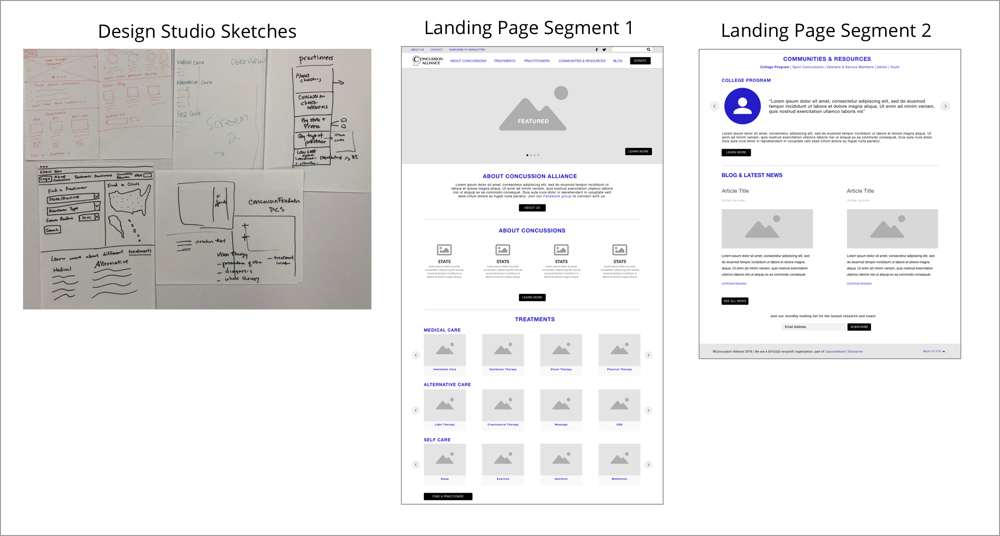

CONCUSSION ALLIANCE
OVERVIEW
- SCOPE:
- This was a three person team project. Our client was Malayka Gormally who is the co-founder of “Concussion Alliance”. We had three weeks to conduct interviews, gather data, create wireframes and high fidelity mockups and deliver a presentation.
- MY ROLE:
- I was the visual designer for this project. This means that I did research on accessibility, studied color theory, created a style guide based on the original website as well as the new design, and redesigned portions of the new website based on user tested wireframes and client needs.
- TOOLS:
- Sketch was the tool of choice throughout the redesign process. InVision brought the high fidelity mockups to life.
DISCOVER
- THE CLIENT:
- Malayka and Conor Gormally, a mother-son team, co-founded Concussion Alliance as a grassroots organization providing concussion information from the perspective of concussion patients and families
- THE CLIENT’S NEEDS:
-
After meeting with our client we were able to pinpoint some
goals for the redesign.
- Redesign landing page
- Improve accessibility and organization of information
- Improve branding/ visual design to transition to a news forawrd site
- Redesign treatment overview page
- Improve layout and organization of treatment information
- WHO ARE THE USERS?:
- A survey was sent out by our researcher to different concussion sites and social media platforms to better understand their needs. Here is the feedback we received:
- INITIAL DESIGN:
-

- ACCESSIBILITY:
- Accessibility is an important aspect to keep in mind when designing a website for any user but especially important to keep in mind when your users include people like Hailey our persona who deal with concussion symptoms including blurred vision, headaches, difficulty concentrating and so forth on a daily basis and can only consume small amounts of content at a time.
- MARKET VISUAL ANALYSIS:
-
I turned to other websites that have similar mission statements
and goals as Concussion Alliance to determine:
- What colors were they using?
- What were the themes in the typography?
- How were photos used to convey their message?
-

- ACCESSIBILITY:
- Accessibility is an important aspect to keep in mind when designing a website for any user but especially important to keep in mind when your users include people like Hailey our persona who deal with concussion symptoms including blurred vision, headaches, difficulty concentrating and so forth on a daily basis and can only consume small amounts of content at a time.
- OBSERVATIONS:
-
- The more effective home pages take a “less is more” approach. Fewer modules make it easier to find information.
- Typography- Oswald font was used for News sites. H1 ranged from 18- 22 px. H2 ranged from 16- 26px. Body text ranged from 14- 20px. Headers are bolded and body is regular or light.
- Color- Light color palettes are used and include blues and Greens
- SO NOW WHAT?:
- Now that the client, users, and market were more understood, it was time to synthesize the data and define the problem.
DEFINE
- RESEARCH:
-

- THE PROBLEM:
- The Concussion Alliance website isn’t meeting users’ goals of easily discovering concussion treatments and locating practitioners, which is causing user frustration and a high bounce rate.
- PERSONA:
- THE SOLUTION:
- By creating an intuitive navigation system and practitioner search feature, young adult concussion patients can find essential information about treatments and where to receive them.
- SOME MORE ON COLOR:
-
A color test was sent out to determine what colors best conveyed
the message of hope, trust and sophistication, words that had
been used to describe the mission of Concussion Alliance.

- SO NOW WHAT?:
- Now it was time to use the data gathered to develop a solution based on user needs
DEVELOP
- WIREFRAMES:
- The team got together and did a design studio where we quickly sketched solutions for the landing page and the new practitioners feature we had discussed with the client. Or interaction designer then used these desings to create her wireframes which she tested multiple times with users. The end result was an easy to navigate home page with a clear path to the treatment and practitioner features.
- 
- NEW STYLE GUIDE:
- Based on the color test and user feedback a new style guide started to take shape.

RATIONALE:
COLOR:
The lighter blue and teal colors were pulled from the color palette test user results because they conveyed a sense of calm, hope, and healing. These were also colors that I saw being used often in other healthcare websites.
CONTRAST:
Users needed a couple dark colors like the dark blue and the black for text against a white background to create a high contrast for readability.
TYPOGRAPHY:
The typography choices included Oswald a font found in a number of news websites and upon further research learned that it is a very readable font. Open Sans was used because it is often paired with Oswald and is a good choice for readability.
The text size used (18-45pt) fell in the “Large or Ex Large” category when researching accessibility.
DELIVER
- REDESIGN:
- The redesign was created based on the persona, Hailey’s need for a cleaner layout and accessibilty. This design also took into account the client’s mission, the tested wireframes, color theory, and readability.
- MORE ON DESIGN:
- The “Treatments” and “Medical Care” pages demonstrates how visuals were introduced to help users navigate the text. A generous use of white space allows for a decrease in cognitive load. There are subtle uses of the color palette in throughout the visuals to demonstrate continuity.